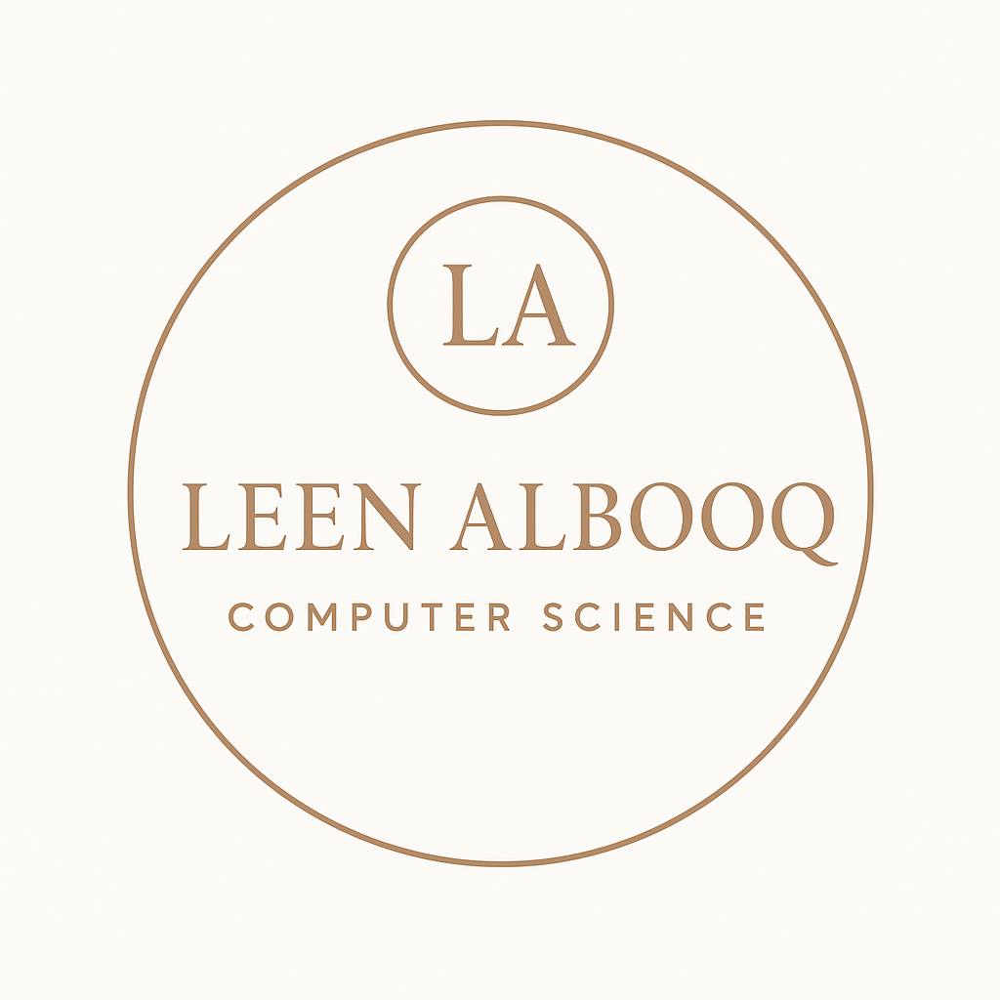

About Me
I am Leen Essam Al-booq, a Computer Science student at Yanbu Industrial College. I am passionate about technology and continuously working on improving my skills in web development and problem solving.
Interests / Hobbies
- Exploring new technologies
- Designing simple websites
- Learning through online courses
Favorite Quote
"Success is not final, failure is not fatal: it is the courage to continue that counts."
— Winston Churchill
Learning Goals
My goal is to build a strong foundation in web development by mastering HTML and CSS. I aim to create responsive and accessible websites and continue learning modern tools that will help me grow as a future software developer.